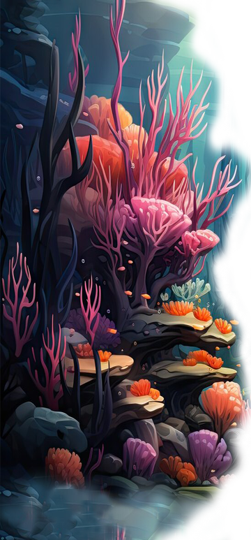

Los octópodos son animales marinos de la familia de los moluscos cefalópodos que carecen de esqueleto: ni interno ni externo. Considerado el más inteligente de todos los invertebrados, el pulpo común se encuentra en las aguas tropicales y templadas de los océanos del mundo. Con su cabeza de forma bulbosa, ocho potentes brazos provistos de tentáculos y dos ojos saltones, el pulpo es uno de los animales más peculiares que podemos encontrar en el fondo marino. Siem embargo detrás de tan extraña apariencia el pulpo también oculta otros secretos. De él sabemos que tiene tres corazones, un cerebro y que en la parte interior de sus ocho brazos cuenta con unas potentes ventosas. La característica más llamativa del pulpo es la amplia gama de técnicas que utiliza para evitar o frustrar los ataques de sus depredadores. Para desplazarse se vele de un mecanismo mediante el cual expulsa agua, lo que le permite propulsarse a gran velocidad. Cuenta además con un depósito de tinta que utiliza para huir de las amenazas a las que se enfrenta en las profundidades del mar.